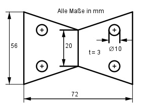

Aufgabe 44 Berechnen Sie die Masse m des Körpers mit einer Dichte ρ von 7,8 g/cm3.

V = 2 * Trapezprisma - 4 * Zylinder d = 10 mm --> r = d/2 = 10 mm/2 = 5 mm hTrapez = 72 mm/2 = 36 mm a + b V = ------- * hTrapez * t - 4 * п * r2 * t 2 56 mm + 20 mm V = 2 * ---------------- * 36 mm * 3 mm - - 4 * п * 52 mm2 * 3 mm 2 V = 8 208 mm3 - 942 mm3 = 7 266 mm3 = 7,266 cm3 m = V * ρ m = 7,266 cm3 * 7,8 g/cm3 = 56,7 g